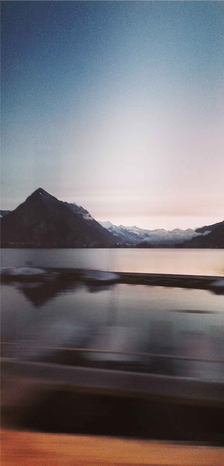
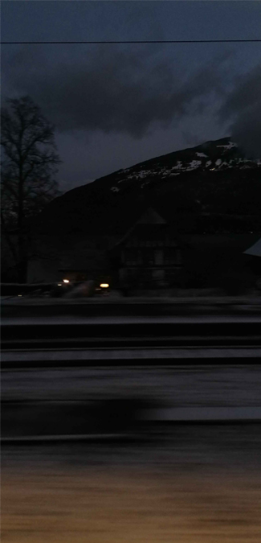
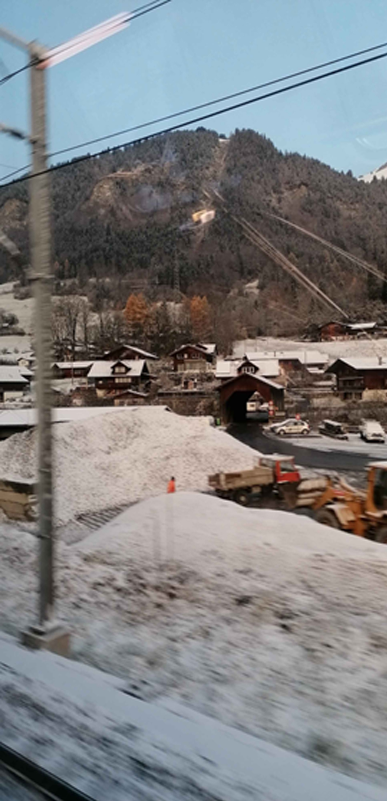
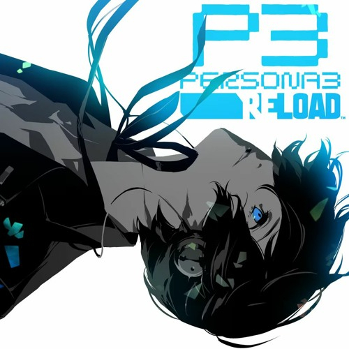
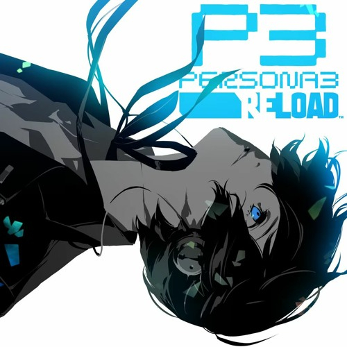
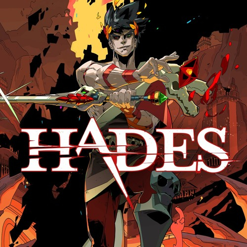
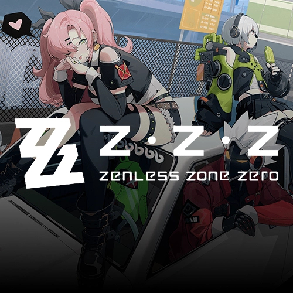
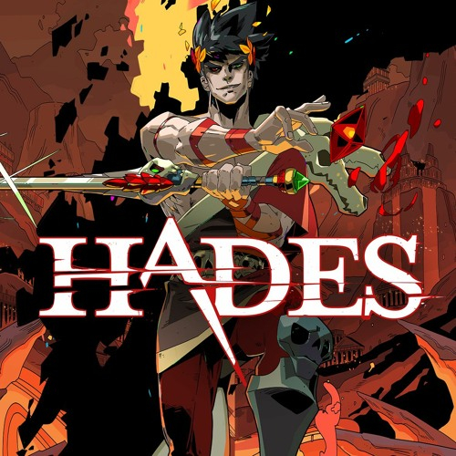
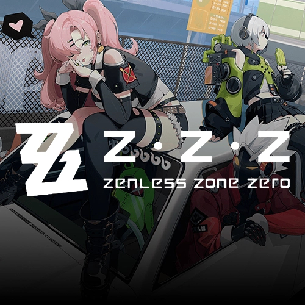

✰ Welcome to the Dreams section! ✰
He're i'll be talking a bit more about myself and my goals/dreams.
<-
Who even am I?
My name is Raffael Imboden, I'm currently 17 years old, and I was born & raised in Bönigen.
I'm a single child and have lived with my mom and dad for as long as i can remember.
As a child i was usually always energetic, really outgoing and genuinely just what
you'd expect from a young child. I went to primary school in Bönigen for 6 years, and
because of my grades, I managed to get into SSI (Sekundarschule Interlaken) and
finished my mandatory school time there in those last three years. I was introduced to
technology pretty early on in life, i had a Nintendo 3DS and a tablet before i probably
should've, however that also led me to get interested in technology pretty early.
Which is why I've decided pretty early in life, that I'd want a job that has something
to do with PCs, and I ultimately settled on software engineer. Sadly that conclusion
took me a bit too long, which led me to struggle with finding an apprenticeship at the
end of 9th grade, so me and my parents decided that I'd fill that one year gap with a
10th school year at NOSS in Spiez, where I was put into level 1 for maths & english and
level 2 for german. I successfully absolved the year with all around good grades and
also some ECDL certificates in various topics, e.g typing, where i can maintain
somewhere between 80-100 WPM nowadays, depending on numbers and punctuation.
Here's my MonkeyTpye account if you're interested in how I've improved,
ever since i wrote this text here. I also absolved a Cambridge exam, where i passed
at grade A, with an overall score of 183, CEFR Level C1.
Anyways, that's enough of who I am for now.
... that I like
Games that I like:
Anime that I like
Some images from my daily life:



 


 


